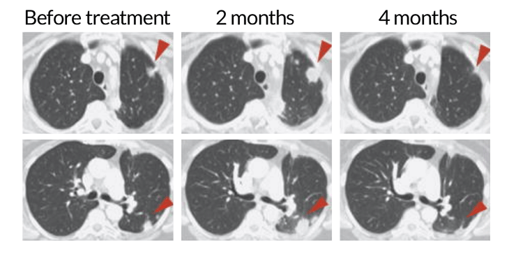

THERAPY WIN The discovery of two immune system regulators and their role in cancer has led to a new way to provide therapy for patients — and has garnered the Nobel Prize in physiology or medicine for James Allison (left) and Tasuku Honjo (right).
Stopping cancer by removing brakes on the immune system has earned James P. Allison of the University of Texas MD Anderson Cancer Center in Houston and Tasuku Honjo of Kyoto University in Japan the
Nobel Prize in physiology or medicine.
“Allison’s and Honjo’s discoveries have added a new pillar in cancer therapy,” Nobel committee member Klas Kärre said in an Oct. 1 news conference announcing the prize. “It’s a new principle.”
Other therapies, such as surgery, radiation and chemotherapy, target tumor cells themselves. The two laureates’ strategy was to
persuade the patient’s own immune system to go after the cancer
(SN: 7/11/15, p. 14). “The seminal discoveries by the two laureates constitutes a paradigmatic shift and a landmark in the fight against cancer,” Kärre said.
The newly minted laureates will equally share the prize of 9 million kronor, equivalent to just over $1 million.
Both men have made substantial contributions to basic research in immunology beyond their work in cancer, says Norman “Ned” Sharpless, director of the National Cancer Institute in Bethesda, Md. The Nobel Assembly at the Karolinska Institute in Stockholm chose to honor the men’s achievement in cancer immunotherapy, but they “also deserve lifetime achievement awards for their contributions to science,” Sharpless says.
Immune cell mob
A patient with non-small cell lung cancer received a treatment targeting the T cell protein PD-1, unleashing the cells to fight the cancer. At two months, the T cells have infiltrated the tumor (red arrows), making it appear bigger. But at four months, the immune cells’ continued attack has shrunk the tumor.
The prize honors Allison’s and Honjo’s work on proteins that help the immune system recognize invading organisms and cancer cells, turning those proteins into therapeutic targets. Allison discovered that CTLA-4, a protein on the surface of immune cells called T cells, holds those cells back from attacking tumors. Allison’s lab developed an antibody against CTLA-4 to release the brake and allow T cells to kill tumor cells. In a series of experiments, Allison and colleagues cured mice of cancer by releasing the CTLA-4 brake.
The therapy proved especially
effective against melanoma in people (SN: 9/25/10, p. 12). In 2011, the U.S. Food and Drug Administration approved ipilimumab, sold under the brand name Yervoy, to treat melanoma, and it is being tested against other cancer types. Although effective, the therapy can sometimes have serious side effects when the unfettered T cells attack other organs in the body.
Allison learned of the prize from his son, who called him in his hotel room in New York City, where he is attending a cancer research conference. Soon, friends were calling and coming to his hotel room to celebrate. “We had a little party in the room this morning,” he said during a news conference. He spoke to the Nobel committee later.
“I did not get into these studies to try to cure cancer. I got in to them because I wanted to know how T cells worked,” Allison said in a news conference. That basic knowledge was instrumental in developing this type of immune therapy. Other approaches such as cancer vaccines hadn’t been as successful, perhaps because “people started with insufficient knowledge,” he said.
Honjo discovered another brake on the surface of T cells called PD-1. Antibodies to block PD-1 have had even more dramatic effects than CTLA-4 blockers, even
helping people with cancer that has spread (SN: 12/27/14, p. 8). Such spreading, or metastatic, cancers were previously untreatable. In 2014, the FDA approved the first “PD-1 blockade” antibodies. Now there are several antibodies against both PD-1 and its partner protein PD-L1 on tumor cells approved for use against melanoma, non-small cell lung cancer, kidney cancer, bladder cancer, head and neck cancers, and Hodgkin lymphoma. Those drugs include Keytruda and Tecentriq, among others. PD-1 blockade also has side effects, but they are generally milder than those caused by CTLA-4 blockers.
Free the cells
Tasuku Honjo identified a protein, called PD-1 (teal Y), on the surface of T cells. When a tumor cell’s protein PD-L1 (light green) latches on to PD-1, it halts the T cell’s ability to fight the tumor (top). Honjo’s work led to the development of drugs (action shown in magenta) that block the proteins from interacting (bottom), freeing the T cells to attack.

Nicolle Rager Fuller
“At the time of PD-1’s discovery in 1992, it was purely a matter of basic scientific research,”
Honjo said at a news conference on October 1. “But as this then led to actual treatments and I then eventually began to hear from patients, such as, ‘This treatment has improved my condition and given me strength again, and it is all thanks to you,’ I really began to understand the meaning of what my work had accomplished.”
These brake-release therapies, known as immune checkpoint therapies, or checkpoint inhibition, have been a boon for cancer patients, says Sharpless. “We’re not curing everybody,” he says, “but in some cancers 20 to 30 percent of patients will have substantial benefit, whereas before we had nothing for those people.”
Some cancers, such as glioblastoma brain cancers and pancreatic cancer, don’t respond to checkpoint inhibition. But tumors with many mutations, such as melanoma — which may contain mutations in thousands of genes — are more likely to be attacked (SN: 7/8/17, p. 7), Allison said. Multiple mutations give T cells more targets for tracking down tumor cells.

.jpg)
.jpg)
.jpg)